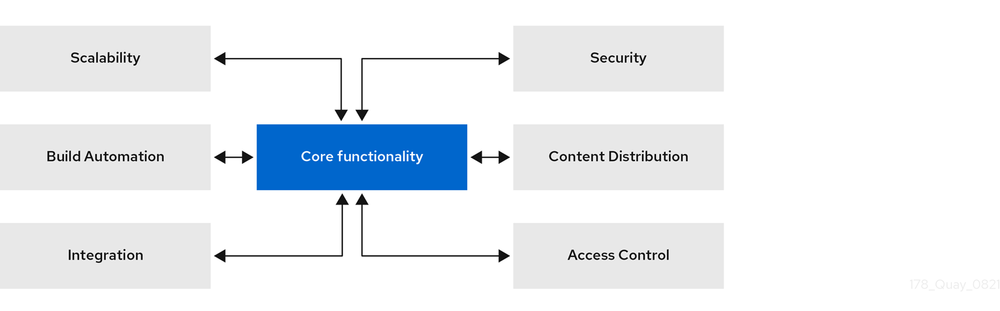
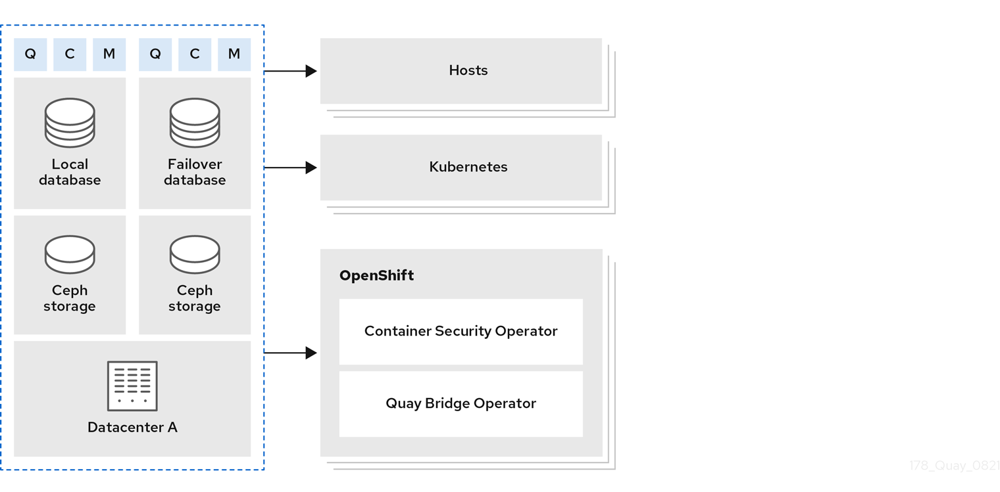
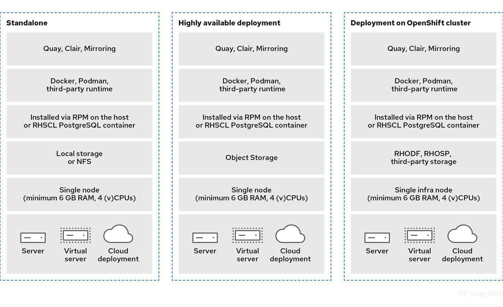
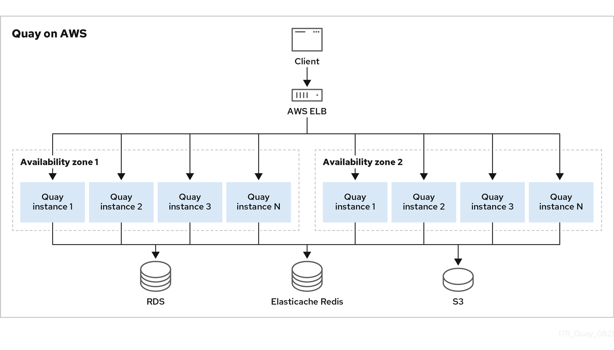
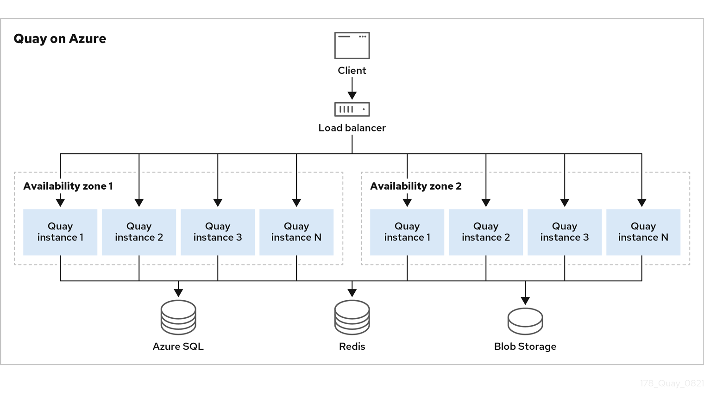
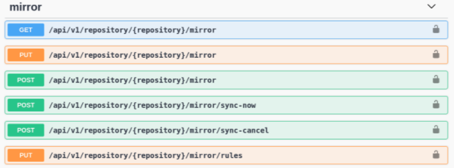
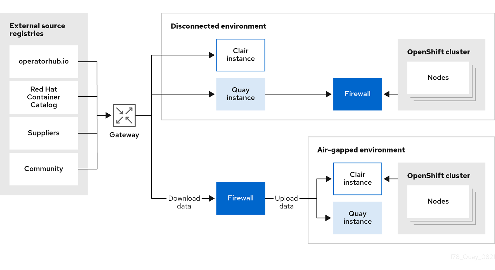

Red Hat Quay architecture
Red Hat Quay Architecture
Abstract
- 1. Red Hat Quay overview
- 2. Red Hat Quay prerequisites
- 3. Red Hat Quay infrastructure
- 4. Deploying Red Hat Quay on premise
- 5. Deploying Red Hat Quay on public cloud
- 6. Content distribution with Red Hat Quay
- 7. Red Hat Quay sizing and subscriptions
Chapter 1. Red Hat Quay overview
Red Hat Quay is a distributed and highly available container image registry for your enterprise.
Red Hat Quay container registry platform provides secure storage, distribution, access controls, geo-replications, repository mirroring, and governance of containers and cloud-native artifacts on any infrastructure. It is available as a standalone component or as an Operator for OpenShift Container Platform, and is deployable on-prem or on a public cloud.

This guide provides an insight into architectural patterns to use when deploying Red Hat Quay. This guide also offers sizing guidance and deployment prerequisites, along with best practices for ensuring high availability for your Red Hat Quay registry.
1.1. Scalability and high availability (HA)
The code base used for Red Hat Quay is the same as the code base used for Quay.io, which is the highly available container image registry hosted by Red Hat. Quay.io and Red Hat Quay offer a multitenant SaaS solution. As a result, users can be confident that their deployment can deliver at scale with high availability, whether their deployment is on-prem or on a public cloud.
1.2. Content distribution
Content distribution features in Red Hat Quay include the following:
- Repository mirroring
- Red Hat Quay repository mirroring lets you mirror images from Red Hat Quay and other container registries, like JFrog Artifactory, Harbor, or Sonatype Nexus Repository, into your Red Hat Quay cluster. Using repository mirroring, you can synchronize images to Red Hat Quay based on repository names and tags.
- Geo-replication
- Red Hat Quay geo-replication allows multiple, geographically distributed Red Hat Quay deployments to work as a single registry from the perspective of a client or user. It significantly improves push and pull performance in a globally-distributed Red Hat Quay setup. Image data is asynchronously replicated in the background with transparent failover and redirection for clients.
- Deployment in disconnected or air-gapped environments
Red Hat Quay is deployable in a disconnected environment in one of two ways:
- Red Hat Quay and Clair connected to the internet, with an air-gapped OpenShift Container Platform cluster accessing the Red Hat Quay registry through an explicit, allowlisted hole in the firewall.
- Using two independent Red Hat Quay and Clair installations. One installation is connected to the internet and another within a disconnected, or firewalled, environment. Image and vulnerability data is manually transferred from the connected environment to the disconnected environment using offline media.
1.3. Build automation
Red Hat Quay supports building Dockerfiles using a set of worker nodes on OpenShift Container Platform or Kubernetes platforms. Build triggers, such as GitHub webhooks, can be configured to automatically build new versions of your repositories when new code is committed.
Prior to Red Hat Quay 3.7, Red Hat Quay ran Podman commands in virtual machines launched by pods. Running builds on virtual platforms requires enabling nested virtualization, which is not featured in Red Hat Enterprise Linux (RHEL) or OpenShift Container Platform. As a result, builds had to run on bare metal clusters, which is an inefficient use of resources. With Red Hat Quay 3.7, this requirement was removed and builds could be run on OpenShift Container Platform clusters running on virtualized or bare metal platforms.
1.4. Red Hat Quay enhanced build architecture
The following image shows the expected design flow and architecture of the enhanced build features:

With this enhancement, the build manager first creates the Job Object. Then, the Job Object then creates a pod using the quay-builder-image. The quay-builder-image will contain the quay-builder binary and the Podman service. The created pod runs as unprivileged. The quay-builder binary then builds the image while communicating status and retrieving build information from the Build Manager.
1.5. Integration
Red Hat Quay can integrate with almost all Git-compatible systems. Red Hat Quay offers automative configuration for GitHub, GitLab, or BitBucket, which allows users to continuously build and serve their containerized software.
1.5.1. REST API
Red Hat Quay provides a full OAuth 2, RESTful API. RESTful API offers the following benefits:
-
Availability from endpoints of each Red Hat Quay instance from the URL, for example,
https://quay-server.example.com/api/v1 -
Allow users to connect to endpoints through a browser, to
GET,DELETE,POST, andPUTRed Hat Quay settings provided by a discovery endpoint that is usable by Swagger. -
The API can be invoked by the URL, for example,
https://quay-server.example.com/api/v1, and uses JSON objects as payload.
1.6. Security
Red Hat Quay is built for real enterprise use cases where content governance and security are two major focus areas.
Red Hat Quay content governance and security includes built-in vulnerability scanning through Clair.
1.6.1. TLS/SSL configuration
You can configure SSL/TLS for the Red Hat Quay registry in the configuration tool UI or in the configuration bundle. SSL/TSL connections to the database, to image storage, and to Redis can also be specified through the configuration tool.
Sensitive fields in the database and at run time are automatically encrypted. You can also require HTTPS and verify certificates for the Red Hat Quay registry during mirror operations.
1.6.2. Clair
Clair is an open source application that leverages static code analyses for parsing image content and reporting vulnerabilities affecting the content. Clair is packaged with Red Hat Quay and can be used in both standalone and Operator deployments. It can be run in highly scalable configurations, where components can be scaled separately as appropriate for enterprise environments.
1.6.3. Red Hat Quay Operator security
When Red Hat Quay is deployed using the Red Hat Quay Operator, the tls component is set to managed by default and the OpenShift Container Platform’s Certificate Authority is used to create HTTPS endpoints and to rotate TLS certificates.
If you set the tls component to unmanaged, you can provide custom certificates to the pass-through Routes, however you are responsible for certificate rotation.
1.6.4. Fully isolated builds
Red Hat Quay now supports building Dockerfiles that uses both bare metal and virtual builders.
By using bare-metal worker nodes, each build is done in an ephemeral virtual machine to ensure isolation and security while the build is running. This provides the best protection against rogue payloads.
Running builds directly in a container does not have the same isolation as when using virtual machines, but it still provides good protection.
1.6.5. Role-based access controls
Red Hat Quay provides full isolation of registry content by organization and team with fine-grained entitlements for read, write, and administrative access by users and automated tools.
1.7. Recently added features
See the Red Hat Quay Release Notes for information about the latest features, enhancements, deprecations, and known issues.
Chapter 2. Red Hat Quay prerequisites
Before deploying Red Hat Quay, you must provision image storage, a database, and Redis.
2.1. Image storage backend
Red Hat Quay stores all binary blobs in its storage backend.
- Local storage
- Red Hat Quay can work with local storage, however this should only be used for proof of concept or test setups, as the durability of the binary blobs cannot be guaranteed.
- HA storage setup
For a Red Hat Quay HA deployment, you must provide HA image storage, for example:
- Red Hat OpenShift Data Foundation, previously known as Red Hat OpenShift Container Storage, is software-defined storage for containers. Engineered as the data and storage services platform for OpenShift Container Platform, Red Hat OpenShift Data Foundation helps teams develop and deploy applications quickly and efficiently across clouds. More information can be found at https://www.redhat.com/en/technologies/cloud-computing/openshift-data-foundation.
- Ceph Object Gateway (also called RADOS Gateway) is an example of a storage solution that can provide the the object storage needed by Red Hat Quay. Detailed instructions on how to use Ceph storage as a highly available storage backend can be found in the Quay High Availability Guide. Further information about Red Hat Ceph Storage and HA setups can be found in the Red Hat Ceph Storage Architecture Guide
- Geo-replication
- Local storage cannot be used for geo-replication, so a supported on premise or cloud based object storage solution must be deployed. Localized image storage is provided in each region and image pulls are served from the closest available storage engine. Container image pushes are written to the preferred storage engine for the Red Hat Quay instance, and will then be replicated, in the background, to the other storage engines. This requires the image storage to be accessible from all regions.
2.1.1. Supported image storage engines
Red Hat Quay supports the following on premise storage types:
- Ceph/Rados RGW
- OpenStack Swift
- Red Hat OpenShift Data Foundation 4 (through NooBaa)
Red Hat Quay supports the following public cloud storage engines:
- Amazon Web Services (AWS) S3
- Google Cloud Storage
- Azure Blob Storage
2.2. Database backend
Red Hat Quay stores all of its configuration information in the config.yaml file. Registry metadata, for example, user information, robot accounts, team, permissions, organizations, images, tags, manifests, etc. are stored inside of the database backend. Logs can be pushed to ElasticSearch if required. PostgreSQL is the preferred database backend because it can be used for both Red Hat Quay and Clair.
A future version of Red Hat Quay will remove support for using MySQL and MariaDB as the database backend, which has been deprecated since the Red Hat Quay 3.6 release. Until then, MySQL is still supported according to the support matrix, but will not receive additional features or explicit testing coverage. The Red Hat Quay Operator supports only PostgreSQL deployments when the database is managed. If you want to use MySQL, you must deploy it manually and set the database component to managed: false.
Deploying Red Hat Quay in a highly available (HA) configuration requires that your database services are provisioned for high availability. If Red Hat Quay is running on public cloud infrastructure, it is recommended that you use the PostgreSQL services provided by your cloud provider, however MySQL is also supported.
Geo-replication requires a single, shared database that is accessible from all regions.
2.3. Redis
Red Hat Quay stores builder logs inside a Redis cache. Because the data stored is ephemeral, Redis does not need to be highly available even though it is stateful.
If Redis fails, you will lose access to build logs, builders, and the garbage collector service. Additionally, user events will be unavailable.
You can use a Redis image from the Red Hat Software Collections or from any other source you prefer.
Chapter 3. Red Hat Quay infrastructure
Red Hat Quay runs on any physical or virtual infrastructure, both on premise or public cloud. Deployments range from simple to massively scaled, like the following:
- All-in-one setup on a developer notebook
- Highly available on virtual machines or on OpenShift Container Platform
- Geographically dispersed across multiple availability zones and regions
3.1. Running Red Hat Quay on standalone hosts
You can automate the standalone deployment process by using Ansible or another automation suite. All standalone hosts require valid a Red Hat Enterprise Linux (RHEL) subscription.
- Proof of Concept deployment
- Red Hat Quay runs on a machine with image storage, containerized database, Redis, and optionally, Clair security scanning.
- Highly available setups
Red Hat Quay and Clair run in containers across multiple hosts. You can use
systemdunits to ensure restart on failure or reboot.High availability setups on standalone hosts require customer-provided load balancers, either low-level TCP load balancers or application load balancers, capable of terminating TLS.
3.2. Running Red Hat Quay on OpenShift
The Red Hat Quay Operator for OpenShift Container Platform provides the following features:
- Automated deployment and management of Red Hat Quay with customization options
- Management of Red Hat Quay and all of its dependencies
- Automated scaling and updates
- Integration with existing OpenShift Container Platform processes like GitOps, monitoring, alerting, logging
- Provision of object storage with limited availability, backed by the multi-cloud object gateway (NooBaa), as part of the Red Hat OpenShift Data Foundation (ODF) Operator. This service does not require an additional subscription.
- Scaled-out, high availability object storage provided by the ODF Operator. This service requires an additional subscription.
Red Hat Quay can run on OpenShift Container Platform infrastructure nodes. As a result, no further subscriptions are required. Running Red Hat Quay on OpenShift Container Platform has the following benefits:
- Zero to Hero: Simplified deployment of Red Hat Quay and associated components means that you can start using the product immediately
- Scalability: Use cluster compute capacity to manage demand through automated scaling, based on actual load
- Simplified Networking: Automated provisioning of load balancers and traffic ingress secured through HTTPS using OpenShift Container Platform TLS certificates and Routes
- Declarative configuration management: Configurations stored in CustomResource objects for GitOps-friendly lifecycle management
- Repeatability: Consistency regardless of the number of replicas of Red Hat Quay and Clair
- OpenShift integration: Additional services to use OpenShift Container Platform Monitoring and Alerting facilities to manage multiple Red Hat Quay deployments on a single cluster
3.3. Integrating standalone Red Hat Quay with OpenShift Container Platform
While the Red Hat Quay Operator ensures seamless deployment and management of Red Hat Quay running on OpenShift Container Platform, it is also possible to run Red Hat Quay in standalone mode and then serve content to one or many OpenShift Container Platform clusters, wherever they are running.
Integrating standalone Red Hat Quay with OpenShift Container Platform

Several Operators are available to help integrate standalone and Operator based deployments ofRed Hat Quay with OpenShift Container Platform, like the following:
- Red Hat Quay Cluster Security Operator
- Relays Red Hat Quay vulnerability scanning results into the OpenShift Container Platform console
- Red Hat Quay Bridge Operator
- Ensures seamless integration and user experience by using Red Hat Quay with OpenShift Container Platform in conjunction with OpenShift Container Platform Builds and ImageStreams
3.4. Mirror registry for Red Hat OpenShift
The mirror registry for Red Hat OpenShift is small-scale version of Red Hat Quay that you can use as a target for mirroring the required container images of OpenShift Container Platform for disconnected installations.
For disconnected deployments of OpenShift Container Platform, a container registry is required to carry out the installation of the clusters. To run a production-grade registry service on such a cluster, you must create a separate registry deployment to install the first cluster. The mirror registry for Red Hat OpenShift addresses this need and is included in every OpenShift Container Platform subscription. It is available for download on the OpenShift console Downloads page.
The mirror registry for Red Hat OpenShift allows users to install a small-scale version of Red Hat Quay and its required components using the mirror-registry command line interface (CLI) tool. The mirror registry for Red Hat OpenShift is deployed automatically with pre-configured local storage and a local database. It also includes auto-generated user credentials and access permissions with a single set of inputs and no additional configuration choices to get started.
The mirror registry for Red Hat OpenShift provides a pre-determined network configuration and reports deployed component credentials and access URLs upon success. A limited set of optional configuration inputs like fully qualified domain name (FQDN) services, superuser name and password, and custom TLS certificates are also provided. This provides users with a container registry so that they can easily create an offline mirror of all OpenShift Container Platform release content when running OpenShift Container Platform in restricted network environments.
The mirror registry for Red Hat OpenShift is limited to hosting images that are required to install a disconnected OpenShift Container Platform cluster, such as release images or Operator images. It uses local storage. Content built by customers should not be hosted by the mirror registry for Red Hat OpenShift.
Unlike Red Hat Quay, the mirror registry for Red Hat OpenShift is not a highly-available registry. Only local file system storage is supported. Using the mirror registry for Red Hat OpenShift with more than one cluster is discouraged, because multiple clusters can create a single point of failure when updating your cluster fleet. It is advised to use the mirror registry for Red Hat OpenShift to install a cluster that can host a production-grade, highly available registry such as Red Hat Quay, which can serve OpenShift Container Platform content to other clusters.
More information is available at Creating a mirror registry with mirror registry for Red Hat OpenShift.
3.5. Single compared to multiple registries
Many users consider running multiple, distinct registries. The preferred approach with Red Hat Quay is to have a single, shared registry:
- If you want a clear separation between development and production images, or a clear separation by content origin, for example, keeping third-party images distinct from internal ones, you can use organizations and repositories, combined with role-based access control (RBAC), to achieve the desired separation.
- Given that the image registry is a critical component in an enterprise environment, you may be tempted to use distinct deployments to test upgrades of the registry software to newer versions. The Red Hat Quay Operator updates the registry for patch releases as well as minor or major updates. This means that any complicated procedures are automated and, as a result, there is no requirement for you to provision multiple instances of the registry to test the upgrade.
- With Red Hat Quay, there is no need to have a separate registry for each cluster you deploy. Red Hat Quay is proven to work at scale at Quay.io, and can serve content to thousands of clusters.
- Even if you have deployments in multiple data centers, you can still use a single Red Hat Quay instance to serve content to multiple physically-close data centers, or use the HA functionality with load balancers to stretch across data centers. Alternatively, you can use the Red Hat Quay geo-replication feature to stretch across physically distant data centers. This requires the provisioning of a global load balancer or DNS-based geo-aware load balancing.
- One scenario where it may be appropriate to run multiple distinct registries, is when you want to specify different configuration for each registry.
In summary, running a shared registry helps you to save storage, infrastructure and operational costs, but a dedicated registry might be needed in specific circumstances.
Chapter 4. Deploying Red Hat Quay on premise
The following image shows examples for on premise configuration, for the following types of deployments:
- Standalone Proof of Concept
- Highly available deployment on multiple hosts
- Deployment on an OpenShift Container Platform cluster by using the Red Hat Quay Operator
On premise example configurations

4.1. Red Hat Quay example deployments
The following image shows three possible deployments for Red Hat Quay:
Deployment examples

- Proof of Concept
- Running Red Hat Quay, Clair, and mirroring on a single node, with local image storage and local database
- Single data center
- Running highly available Red Hat Quay, Clair ,and mirroring, on multiple nodes, with HA database and image storage
- Multiple data centers
- Running highly available Red Hat Quay, Clair, and mirroring, on multiple nodes in multiple data centers, with HA database and image storage
4.2. Red Hat Quay deployment topology
The following image provides a high level overview of a Red Hat Quay deployment topology:
Red Hat Quay deployment topology

In this deployment, all pushes, user interface, and API requests are received by public Red Hat Quay endpoints. Pulls are served directly from object storage.
4.3. Red Hat Quay deployment topology with storage proxy
The following image provides a high level overview of a Red Hat Quay deployment topology with storage proxy configured:
Red Hat Quay deployment topology with storage proxy

With storage proxy configured, all traffic passes through the public Red Hat Quay endpoint.
Chapter 5. Deploying Red Hat Quay on public cloud
Red Hat Quay can run on public clouds, either in standalone mode or where OpenShift Container Platform itself has been deployed on public cloud. A full list of tested and supported configurations can be found in the Red Hat Quay Tested Integrations Matrix at https://access.redhat.com/articles/4067991.
Recommendation: If Red Hat Quay is running on public cloud, then you should use the public cloud services for Red Hat Quay backend services to ensure proper high availability and scalability.
5.1. Running Red Hat Quay on Amazon Web Services
If Red Hat Quay is running on Amazon Web Services (AWS), you can use the following features:
- AWS Elastic Load Balancer
- AWS S3 (hot) blob storage
- AWS RDS database
- AWS ElastiCache Redis
- EC2 virtual machine recommendation: M3.Large or M4.XLarge
The following image provides a high level overview of Red Hat Quay running on AWS:
Red Hat Quay on AWS

5.2. Running Red Hat Quay on Microsoft Azure
If Red Hat Quay is running on Microsoft Azure, you can use the following features:
- Azure managed services such as highly available PostgreSQL
Azure Blob Storage must be hot storage
- Azure cool storage is not available for Red Hat Quay
- Azure Cache for Redis
The following image provides a high level overview of Red Hat Quay running on Microsoft Azure:
Red Hat Quay on Microsoft Azure

Chapter 6. Content distribution with Red Hat Quay
Content distribution features in Red Hat Quay include:
6.1. Repository mirroring
Red Hat Quay repository mirroring lets you mirror images from external container registries, or another local registry, into your Red Hat Quay cluster. Using repository mirroring, you can synchronize images to Red Hat Quay based on repository names and tags.
From your Red Hat Quay cluster with repository mirroring enabled, you can perform the following:
- Choose a repository from an external registry to mirror
- Add credentials to access the external registry
- Identify specific container image repository names and tags to sync
- Set intervals at which a repository is synced
- Check the current state of synchronization
To use the mirroring functionality, you need to perform the following actions:
- Enable repository mirroring in the Red Hat Quay configuration file
- Run a repository mirroring worker
- Create mirrored repositories
All repository mirroring configurations can be performed using the configuration tool UI or by the Red Hat Quay API.
6.1.1. Using repository mirroring
The following list shows features and limitations of Red Hat Quay repository mirroring:
- With repository mirroring, you can mirror an entire repository or selectively limit which images are synced. Filters can be based on a comma-separated list of tags, a range of tags, or other means of identifying tags through Unix shell-style wildcards. For more information, see the documentation for wildcards.
- When a repository is set as mirrored, you cannot manually add other images to that repository.
- Because the mirrored repository is based on the repository and tags you set, it will hold only the content represented by the repository and tag pair. For example if you change the tag so that some images in the repository no longer match, those images will be deleted.
- Only the designated robot can push images to a mirrored repository, superseding any role-based access control permissions set on the repository.
- Mirroring can be configured to rollback on failure, or to run on a best-effort basis.
- With a mirrored repository, a user with read permissions can pull images from the repository but cannot push images to the repository.
- Changing settings on your mirrored repository can be performed in the Red Hat Quay user interface, using the Repositories → Mirrors tab for the mirrored repository you create.
- Images are synced at set intervals, but can also be synced on demand.
6.1.2. Repository mirroring recommendations
Best practices for repository mirroring include the following:
- Repository mirroring pods can run on any node. This means that you can run mirroring on nodes where Red Hat Quay is already running.
- Repository mirroring is scheduled in the database and runs in batches. As a result, repository workers check each repository mirror configuration file and reads when the next sync needs to be. More mirror workers means more repositories can be mirrored at the same time. For example, running 10 mirror workers means that a user can run 10 mirroring operators in parallel. If a user only has 2 workers with 10 mirror configurations, only 2 operators can be performed.
The optimal number of mirroring pods depends on the following conditions:
- The total number of repositories to be mirrored
- The number of images and tags in the repositories and the frequency of changes
Parallel batching
For example, if a user is mirroring a repository that has 100 tags, the mirror will be completed by one worker. Users must consider how many repositories one wants to mirror in parallel, and base the number of workers around that.
Multiple tags in the same repository cannot be mirrored in parallel.
6.1.3. Event notifications for mirroring
There are three notification events for repository mirroring:
- Repository Mirror Started
- Repository Mirror Success
- Repository Mirror Unsuccessful
The events can be configured inside of the Settings tab for each repository, and all existing notification methods such as email, Slack, Quay UI, and webhooks are supported.
6.1.4. Mirroring API
You can use the Red Hat Quay API to configure repository mirroring:
Mirroring API

More information is available in the Red Hat Quay API Guide
6.2. Geo-replication
Geo-replication allows multiple, geographically distributed Red Hat Quay deployments to work as a single registry from the perspective of a client or user. It significantly improves push and pull performance in a globally-distributed Red Hat Quay setup. Image data is asynchronously replicated in the background with transparent failover and redirect for clients.
Deployments of Red Hat Quay with geo-replication is supported on standalone and Operator deployments.
6.2.1. Geo-replication features
- When geo-replication is configured, container image pushes will be written to the preferred storage engine for that Red Hat Quay instance. This is typically the nearest storage backend within the region.
- After the initial push, image data will be replicated in the background to other storage engines.
- The list of replication locations is configurable and those can be different storage backends.
- An image pull will always use the closest available storage engine, to maximize pull performance.
- If replication has not been completed yet, the pull will use the source storage backend instead.
6.2.2. Geo-replication requirements and constraints
- In geo-replicated setups, Red Hat Quay requires that all regions are able to read and write to all other region’s object storage. Object storage must be geographically accessible by all other regions.
- In case of an object storage system failure of one geo-replicating site, that site’s Red Hat Quay deployment must be shut down so that clients are redirected to the remaining site with intact storage systems by a global load balancer. Otherwise, clients will experience pull and push failures.
- Red Hat Quay has no internal awareness of the health or availability of the connected object storage system. If the object storage system of one site becomes unavailable, there will be no automatic redirect to the remaining storage system, or systems, of the remaining site, or sites.
- Geo-replication is asynchronous. The permanent loss of a site incurs the loss of the data that has been saved in that sites' object storage system but has not yet been replicated to the remaining sites at the time of failure.
A single database, and therefore all metadata and Red Hat Quay configuration, is shared across all regions.
Geo-replication does not replicate the database. In the event of an outage, Red Hat Quay with geo-replication enabled will not failover to another database.
- A single Redis cache is shared across the entire Red Hat Quay setup and needs to accessible by all Red Hat Quay pods.
-
The exact same configuration should be used across all regions, with exception of the storage backend, which can be configured explicitly using the
QUAY_DISTRIBUTED_STORAGE_PREFERENCEenvironment variable. - Geo-replication requires object storage in each region. It does not work with local storage.
- Each region must be able to access every storage engine in each region, which requires a network path.
- Alternatively, the storage proxy option can be used.
- The entire storage backend, for example, all blobs, is replicated. Repository mirroring, by contrast, can be limited to a repository, or an image.
- All Red Hat Quay instances must share the same entrypoint, typically through a load balancer.
- All Red Hat Quay instances must have the same set of superusers, as they are defined inside the common configuration file.
-
Geo-replication requires your Clair configuration to be set to
unmanaged. An unmanaged Clair database allows the Red Hat Quay Operator to work in a geo-replicated environment, where multiple instances of the Red Hat Quay Operator must communicate with the same database. For more information, see Advanced Clair configuration. - Geo-Replication requires SSL/TLS certificates and keys. For more information, see Using SSL/TLS to protect connections to Red Hat Quay.
If the above requirements cannot be met, you should instead use two or more distinct Red Hat Quay deployments and take advantage of repository mirroring functions.
6.2.3. Geo-replication using standalone Red Hat Quay
In the following image, Red Hat Quay is running standalone in two separate regions, with a common database and a common Redis instance. Localized image storage is provided in each region and image pulls are served from the closest available storage engine. Container image pushes are written to the preferred storage engine for the Red Hat Quay instance, and will then be replicated, in the background, to the other storage engines.
If Clair fails in one cluster, for example, the US cluster, US users would not see vulnerability reports in Red Hat Quay for the second cluster (EU). This is because all Clair instances have the same state. When Clair fails, it is usually because of a problem within the cluster.
Geo-replication architecture

6.2.4. Geo-replication using the Red Hat Quay Operator

In the example shown above, the Red Hat Quay Operator is deployed in two separate regions, with a common database and a common Redis instance. Localized image storage is provided in each region and image pulls are served from the closest available storage engine. Container image pushes are written to the preferred storage engine for the Quay instance, and will then be replicated, in the background, to the other storage engines.
Because the Operator now manages the Clair security scanner and its database separately, geo-replication setups can be leveraged so that they do not manage the Clair database. Instead, an external shared database would be used. Red Hat Quay and Clair support several providers and vendors of PostgreSQL, which can be found in the Red Hat Quay 3.x test matrix. Additionally, the Operator also supports custom Clair configurations that can be injected into the deployment, which allows users to configure Clair with the connection credentials for the external database.
6.2.5. Mixed storage for geo-replication
Red Hat Quay geo-replication supports the use of different and multiple replication targets, for example, using AWS S3 storage on public cloud and using Ceph storage on premise. This complicates the key requirement of granting access to all storage backends from all Red Hat Quay pods and cluster nodes. As a result, it is recommended that you use the following:
- A VPN to prevent visibility of the internal storage, or
- A token pair that only allows access to the specified bucket used by Red Hat Quay
This results in the public cloud instance of Red Hat Quay having access to on-premise storage, but the network will be encrypted, protected, and will use ACLs, thereby meeting security requirements.
If you cannot implement these security measures, it might be preferable to deploy two distinct Red Hat Quay registries and to use repository mirroring as an alternative to geo-replication.
6.3. Repository mirroring compared to geo-replication
Red Hat Quay geo-replication mirrors the entire image storage backend data between 2 or more different storage backends while the database is shared, for example, one Red Hat Quay registry with two different blob storage endpoints. The primary use cases for geo-replication include the following:
- Speeding up access to the binary blobs for geographically dispersed setups
- Guaranteeing that the image content is the same across regions
Repository mirroring synchronizes selected repositories, or subsets of repositories, from one registry to another. The registries are distinct, with each registry having a separate database and separate image storage.
The primary use cases for mirroring include the following:
- Independent registry deployments in different data centers or regions, where a certain subset of the overall content is supposed to be shared across the data centers and regions
- Automatic synchronization or mirroring of selected (allowlisted) upstream repositories from external registries into a local Red Hat Quay deployment
Repository mirroring and geo-replication can be used simultaneously.
Table 6.1. Red Hat Quay Repository mirroring and geo-replication comparison
| Feature / Capability | Geo-replication | Repository mirroring |
|---|---|---|
|
What is the feature designed to do? |
A shared, global registry |
Distinct, different registries |
|
What happens if replication or mirroring has not been completed yet? |
The remote copy is used (slower) |
No image is served |
|
Is access to all storage backends in both regions required? |
Yes (all Red Hat Quay nodes) |
No (distinct storage) |
|
Can users push images from both sites to the same repository? |
Yes |
No |
|
Is all registry content and configuration identical across all regions (shared database)? |
Yes |
No |
|
Can users select individual namespaces or repositories to be mirrored? |
No |
Yes |
|
Can users apply filters to synchronization rules? |
No |
Yes |
|
Are individual / different role-base access control configurations allowed in each region |
No |
Yes |
6.4. Air-gapped or disconnected deployments
In the following diagram, the upper deployment in the diagram shows Red Hat Quay and Clair connected to the internet, with an air-gapped OpenShift Container Platform cluster accessing the Red Hat Quay registry through an explicit, allowlisted hole in the firewall.
The lower deployment in the diagram shows Red Hat Quay and Clair running inside of the firewall, with image and CVE data transferred to the target system using offline media. The data is exported from a separate Red Hat Quay and Clair deployment that is connected to the internet.
The following diagram shows how Red Hat Quay and Clair can be deployed in air-gapped or disconnected environments:
Red Hat Quay and Clair in disconnected, or air-gapped, environments

Chapter 7. Red Hat Quay sizing and subscriptions
Scalability of Red Hat Quay is one of its key strengths, with a single code base supporting a broad spectrum of deployment sizes, including the following:
- Proof of Concept deployment on a single development machine
- Mid-size deployment of approximately 2,000 users that can serve content to dozens of Kubernetes clusters
- High-end deployment such as Quay.io that can serve thousands of Kubernetes clusters world-wide
Since sizing heavily depends on a multitude of factors, such as the number of users, images, concurrent pulls and pushes, there are no standard sizing recommendations.
The following are the minimum requirements for systems running Red Hat Quay (per container/pod instance):
- Quay: minimum 6 GB; recommended 8 GB, 2 more more vCPUs
- Clair: recommended 2 GB RAM and 2 or more vCPUs
- Storage:: recommended 30 GB
-
NooBaa: minimum 2 GB, 1 vCPU (when
objectstoragecomponent is selected by the Operator) - Clair database: minimum 5 GB required for security metadata
Stateless components of Red Hat Quay can be scaled out, but this will cause a heavier load on stateful backend services.
7.1. Red Hat Quay sample sizings
The following table shows approximate sizing for Proof of Concept, mid-size, and high-end deployments. Whether a deployment runs appropriately with the same metrics depends on many factors not shown below.
| Metric | Proof of concept | Mid-size | High End (Quay.io) |
|---|---|---|---|
|
No. of Quay containers by default |
1 |
4 |
15 |
|
No. of Quay containers max at scale-out |
N/A |
8 |
30 |
|
No. of Clair containers by default |
1 |
3 |
10 |
|
No. of Clair containers max at scale-out |
N/A |
6 |
15 |
|
No. of mirroring pods (to mirror 100 repositories) |
1 |
5-10 |
N/A |
|
Database sizing |
2 -4 Cores |
4-8 Cores |
32 cores |
|
Object storage backend sizing |
10-100 GB |
1 - 20 TB |
50+ TB up to PB |
|
Redis cache sizing |
2 Cores |
4 cores | |
|
Underlying node sizing |
4 Cores |
4-6 Cores |
Quay: |
For further details on sizing & related recommendations for mirroring, see the section on repository mirroring.
The sizing for the Redis cache is only relevant if you use Quay builders, otherwise it is not significant.
7.2. Red Hat Quay subscription information
Red Hat Quay is available with Standard or Premium support, and subscriptions are based on deployments.
Deployment means an installation of a single Red Hat Quay registry using a shared data backend.
With a Red Hat Quay subscription, the following options are available:
- There is no limit on the number of pods, such as Quay, Clair, Builder, and so on, that you can deploy.
- Red Hat Quay pods can run in multiple data centers or availability zones.
- Storage and database backends can be deployed across multiple data centers or availability zones, but only as a single, shared storage backend and single, shared database backend.
- Red Hat Quay can manage content for an unlimited number of clusters or standalone servers.
- Clients can access the Red Hat Quay deployment regardless of their physical location.
- You can deploy Red Hat Quay on OpenShift Container Platform infrastructure nodes to minimize subscription requirements.
- You can run the Container Security Operator (CSO) and the Quay Bridge Operator (QBO) on your OpenShift Container Platform clusters at no additional cost.
Red Hat Quay geo-replication requires a subscription for each storage replication. The database, however, is shared.
For more information about purchasing a Red Hat Quay subscription, see Red Hat Quay.
7.3. Using Red Hat Quay with or without internal registry
Red Hat Quay can be used as an external registry in front of multiple OpenShift Container Platform clusters with their internal registries.
Red Hat Quay can also be used in place of the internal registry when it comes to automating builds and deployment rollouts. The required coordination of Secrets and ImageStreams is automated by the Quay Bridge Operator, which can be launched from the OperatorHub for OpenShift Container Platform.